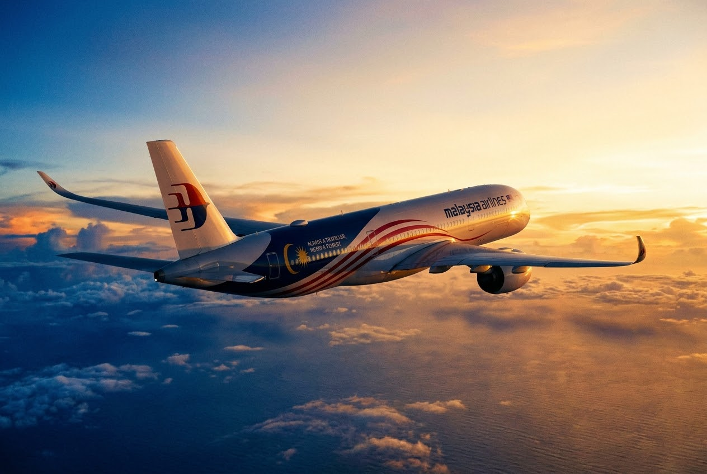
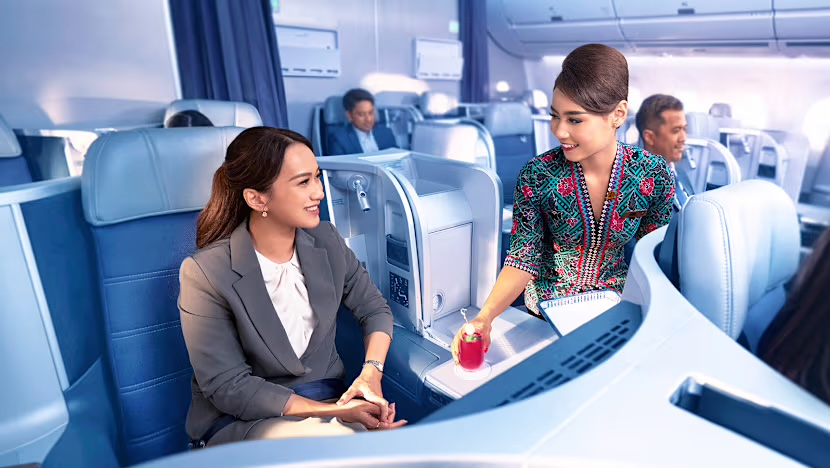

This is Malaysian hospitality.
A brand repositioning for Malaysia Airlines that moved the story from service to soul, reclaiming the emotional heart of a national carrier and giving it a platform built to outlast a single campaign.
Humanising a national icon.
The challenge was to reclaim the emotional heart of Malaysia Airlines after a period of acute institutional crisis. Functional excellence was a given. What the brand needed was its soul back.
As Project Director and Strategist, I owned the work for the agency end to end, from the strategic platform through to the final cut, holding creative, production and brand standards aligned at every stage.

Service to soul
Moving the proposition from efficiency and reliability to warmth, empathy and belonging.
Global resonance
A Malaysian truth told so it carried across European and Asian markets alike.
From platform to every touchpoint.
"This is Malaysian hospitality" became the organising idea for the whole brand experience, a platform celebrating the warmth and spirit of Malaysian travel rather than the mechanics of flying. It rolled out across the brand film, advertising, cabin and crew experience, digital and trade, unifying every market behind a single emotional narrative.
"This is Malaysian Hospitality", the brand film at the heart of the repositioning.
A narrative reclaimed, and recognised.
The platform shifted the public conversation from crisis to the warmth of Malaysian hospitality, and gave the airline a durable narrative foundation that outlived the campaign cycle it launched in.